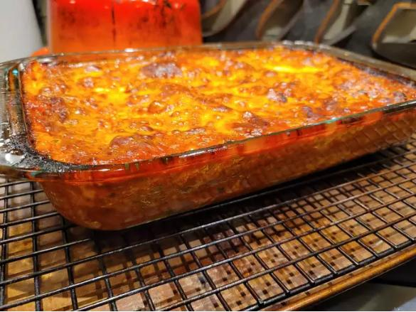

Lasagna

Description
I love cooking lasagna but it is hard dish to master. I sourced this recipe by combining the recipes of a few different chef friends that I have. Best enjoyed with some garlic bread on the side and a nice glass of wine.
Ingredients
- 1 Pound Italian Sausage
- 3/4 pound ground beef
- 1/2 cup minced onion
- 2 cloves of minced garlic
- 1 can of tomato paste
- Sugar
- 1 tablespoon Italian seasoning
- 1 tablespoon of red or white wine vinegar
- 1/2 pound dry lasagna noodles
- 15 ounces ricotta cheese
- 1 egg
Steps:
- Put pasta water on to boil
- Heat oven to 375°F
- Brown the ground beef
- Add onions and garlic to skillet with beef
- Transfer mixture to medium pot
- Add tomatoes and remaining sauce
- Boil and drain lasagna noodles
- Assemble the lasagna in a large casserole dish:
- Laddle a cup of sauce on the bottom of the dish
- Arrange a layer of noodles to cover the bottom
- Laddle some sauce over the noodles
- Cover the sauce in cheese
- Repeat until you are out of sauce, noodles, and cheese
- Bake at 375°F for 45 minutes. Serve hot.